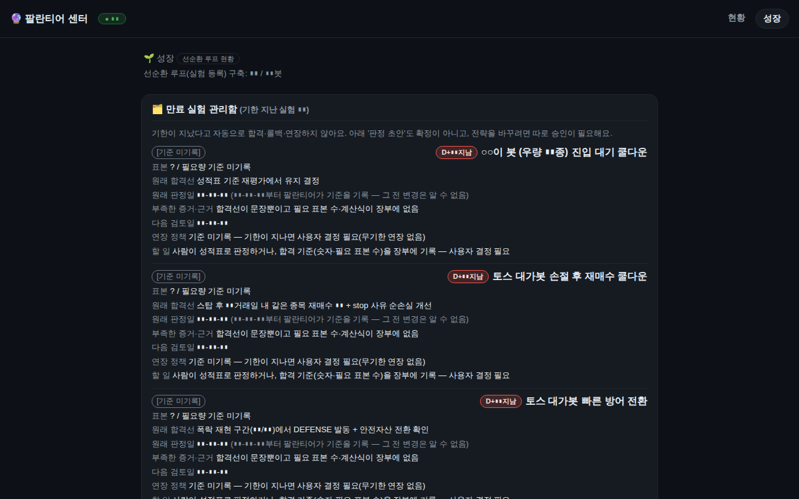

실전 가동
주식 자동매매
💵 실돈Claude Code
지정종목 적립봇 Picks DCA Bot
사용자가 지정한 미국 5종목을 봇이 비중과 타이밍만 운용하는 적립 봇
종목 선택은 사람이, 비중·타이밍은 봇이 맡는 지정종목 적립식 포트폴리오 봇이다. sector-dca-bot을 포크해 감사로 다져진 안전장치를 그대로 이어받았다.
날씨 3단계(정상/적립 절반+틸트 동결/방어 축소)로 시장 상황에 따라 적립 강도를 조절하고, 기존 보유 종목은 편입동결 상태로 두었다가 비중이 차오르면 자동 해제한다.
즉시매수(lumpsum) 섀도와 비교하는 판정일(2027-01)이 있고, 종목 교체는 봇이 제안하고 사람이 승인하는 방식이다. 하루 한 통 다이제스트 알림을 보낸다.
- 기간
- 2026-07 ~ 2026-09-25
- 기술
pythonsqlitetelegramsystemdtoss-open-api- 코드
- 40,626 줄
- 테스트
- 1,067 개
- 커밋
- 69
- systemd 유닛
- 1 개
- 저장소
- intohumble-ai/picks-dca-bot (비공개)
세션 0 (Claude Code 0 · Codex 0)마지막 활동 2026-09-25
- 2026-09-25 13:39커밋fix(RV-02B 콜드감사 P3-B·C·D): 읽기전용 회귀 테스트 + 롤백 순서(정지 후 관문) + 백업명 셸 안내
- 2026-09-25 13:30커밋fix(RV-02B 최종감사 D2·D3·P3): 검사 도구 롤백 관문 + 절차서 통일 + 주문 사이클 무체결 해제 알림
- 2026-09-25 13:03커밋feat(RV-02B 사용자 결정 D-1×수수료): 예약액이 장부 현금보다 수수료 한도 이내로만 크면 주문
- 2026-09-25 12:22커밋fix(RV-02B 재감사 P2): 분할 판정 제외는 placed 종목만 — down-sync 보호 집합과 일치
- 2026-09-25 12:14커밋fix(RV-02B 7/7 콜드감사 P2×2·P3-1): 사건 알림은 실 notifier, 미확정 주문 종목은 분할 감지 제외, catchup
- 2026-09-25 11:59커밋feat(RV-02B 6/7): 이행 대사 스크립트(mode=ro)·배포 절차·설계 이탈표 + picks 고유 맞물림 테스트
- 2026-09-25 11:59커밋test(RV-02B 5/7): 공용 하네스(byte 동일)+picks 어댑터, 중단점 표·추가 케이스·외부검토 반례 4종·RV-02 반례를 실
- 2026-09-25 11:59커밋feat(RV-02B 4/7): 텔레그램 읽기 명령 /근거 /재조회 /확인했음(D-5) + 수동 해소 /해소→/해소확인 2단계(기본 OFF)
- 2026-09-25 11:59커밋feat(RV-02B 3/7): 주문 1건 T1/T2/T3 원자성·re-place 제거·⑦ LIVE 현금 저장 제거·D-6 동결·증거 기반 re
- 2026-09-25 11:59커밋feat(RV-02B 2/7): ledger tx 헬퍼(BEGIN IMMEDIATE·중첩·rollback)·실행무결성 4표·CRUD·멱등 이행
- 2026-09-25 11:59커밋feat(RV-02B 1/7): toss_client 주문 POST 불변조건 이식 — sector 9e7f258 과 byte 동일
- 2026-09-24 23:16커밋fix(RV-02 3차 감사): 주문 접수 뒤 체결 조회 실패에도 잠금이 걸리게 한다
세션 제목과 커밋 제목만 표시합니다. 대화 내용·파일·경로는 공개하지 않습니다.
- 지정 5종목 + 벤치마크 종목 운용
- 날씨 3단계 적립 강도 조절
- 편입동결(catchup_freeze)과 자동 해제
- 교체 제안-승인 흐름과 순위 역전 알람
- 즉시매수(lumpsum) 섀도 비교
- 세금 게이지와 체감 손익 표시
- 배당 재투자
- 하루 1통 다이제스트 알림
- 킬스위치와 방어 매도
서비스active
마지막 커밋2026-09-25
데이터 기준2026-10-10 21:36
테스트 수1,067
실적·잔고·수익률은 공개 정책상 표시하지 않습니다(설정으로 켤 수 있음). 상태는 PC 의 빌더가 10분마다 읽어 올립니다.
실제 화면을 찍은 뒤 숫자·식별자를 자동으로 가린 스크린샷입니다.

가짜 데이터로 돌아가는 미니 데모입니다. 직접 눌러보세요. (실 계좌·실 API 와 연결돼 있지 않습니다)
새 창에서 열기 →- 이중 차감 버그(P1)와 회계 수정(PA)을 진행 문서로 추적하며 수리
- 단일 종목 전액 매수 시 수수료 헤드룸 부족으로 주문이 거절될 수 있는 경계 사례를 확인
- 로거 이름이 포크 원본(sector)을 그대로 쓰는 표시상 잔재가 남음
- 판정 기준(섀도 대비 ▮% 등)을 인셉션 시점에 미리 고정
이 프로젝트에 등록된 아이디어가 아직 없습니다.